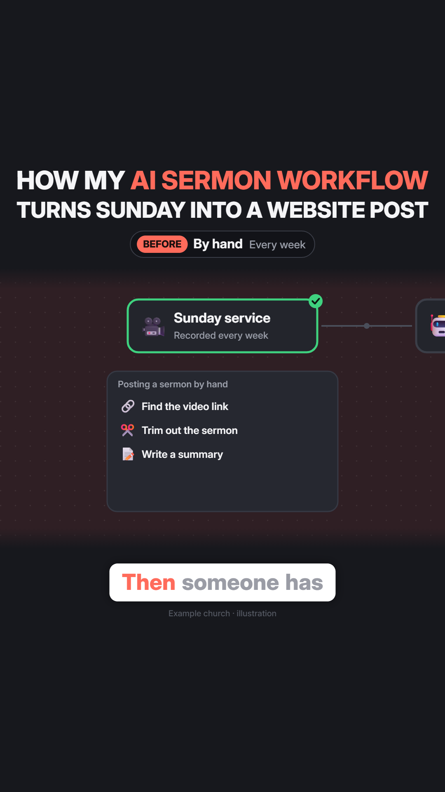
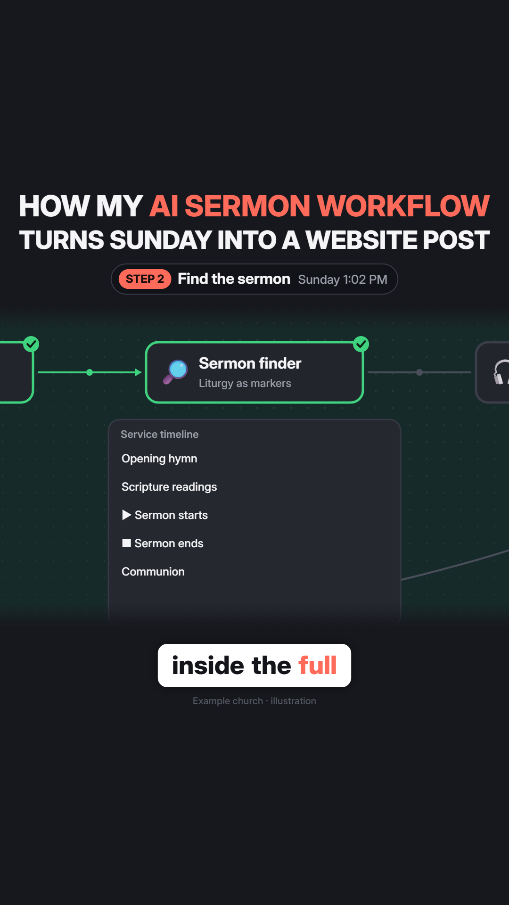
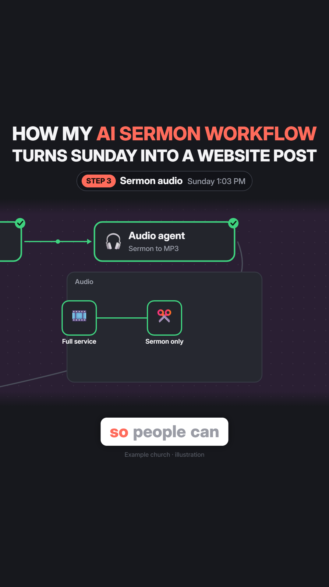
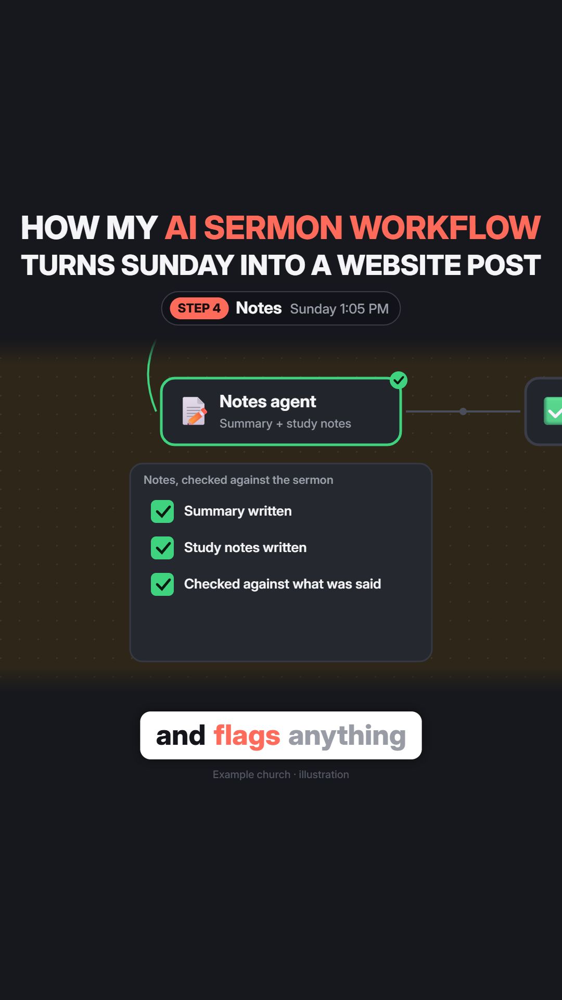
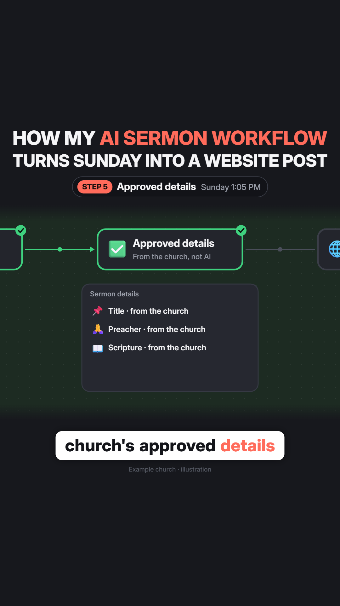
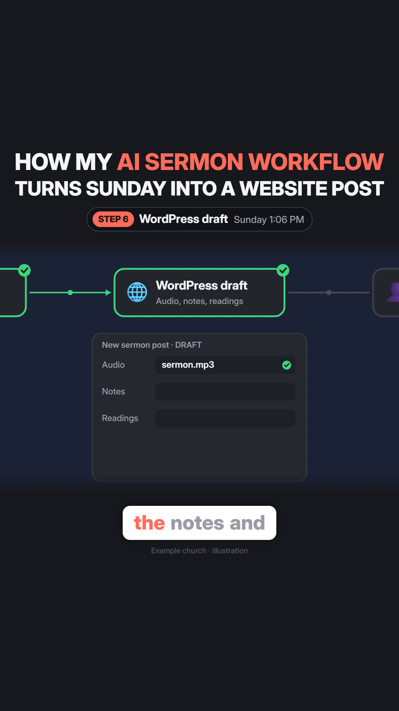
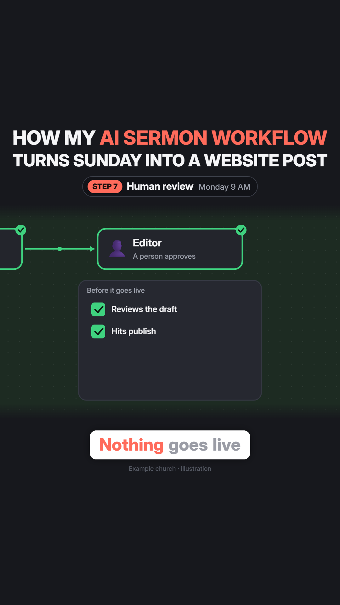
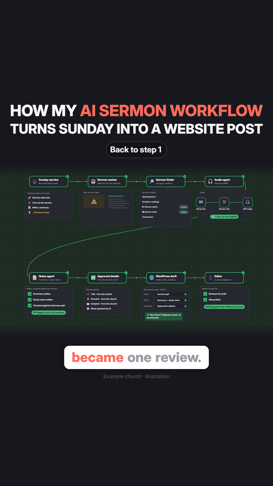

00:03.5Every Sunday, a church recordsSunday service: kv
00:11.7My sermon worker spotsSermon worker: media

00:16.8Then it finds whereSermon finder: list

00:22.5It cuts the sermonAudio agent: steps

00:28.0Next, my notes agentNotes agent: checklist

00:34.5The title, preacher andApproved details: kv

00:40.3Then it creates aWordPress draft: form

00:49.0An editor reviews theEditor: checklist

00:52.8Thirteen manual steps becameZoom out over the whole workflow.

00:57.5If you run a churchComment BUILD.